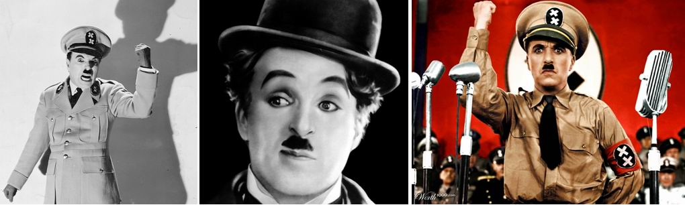

Purim. Holy Laughter
"Laughter itself, humour, is a very serious weapon." Sergey Komyagin.
The "Purim-shpil" (Yiddish: Purim play) is a humorous and satirical play traditionally performed in Jewish communities at the feast of Purim. At first such plays were simple and short (the text did not exceed a few hundred rhymed lines), but by the early 18th century the influence of European theatre began to show in the Purim-shpils, and they gradually turned into dramatic productions with many roles and musical accompaniment.
For the beginning of the conversation, see "Purim-shpil. Exposing Evil…"

Purim. Holy laughter
My guests are the actors of the Ecclesiastes Drama Theatre in Yaroslavl, Sergey Komyagin and Sergey Lukyanov.
Ephraim Kalish: Do you think that laughter and ridicule are acceptable for a believer? It is well known that throughout its history the church has looked negatively on this kind of thing and has condemned laughter.
Sergey Komyagin: Laughter itself, humour, is a very serious weapon. When the famous Charlie Chaplin made his masterpiece "The Great Dictator" and ridiculed Hitler in it, he became Hitler's personal enemy. Hitler hated no one as much as he hated Charlie Chaplin. Why? Because Hitler was ridiculed there. You can do anything… You can dislike Hitler, you can curse him.

Sergey Lukyanov: It won't help!
Sergey Komyagin: Right. But once it has been ridiculed… as Scripture says: "He that sitteth in the heavens shall laugh: the Lord shall have them in derision" (Ps. 2:4). He, the Lord, gave us laughter.
So in fact holy things too can be ridiculed, and in that way we would destroy them, because it is a very serious weapon. It is like an atomic bomb. You can criticise something holy and it will not be as destructive as ridiculing it.
So the question is what we will do with this weapon, and in whose hands it is. If it really is in God's hands, in the hands of a holy person, then he can expose the kingdom of darkness this way; he can ridicule it, can shame that kingdom of darkness so thoroughly that there is no longer any need to criticise it. A person watches and experiences an incredible sense of freedom.
When we toured with the play "Spiritual Warfare", we visited various congregations, including religious ones, and after the performances people shared their experiences with us. First of all, they had not known this was possible. Before, they had been sure it was a sin, the sin of play-acting.
Watch the play "SPIRITUAL WARFARE" (in Russian).
But during the performance they experienced such freedom! Afterwards they thanked us: their whole old view had been turned upside down in an instant. "How wonderful that you ridiculed all these things. We saw ourselves in it." They simply experienced freedom. Because the kingdom of darkness had been destroyed by the shells of God's humour.
The ability itself (wit) is neutral. A person gifted with wit, if he is ungodly, can ridicule holy things, and that will be destructive in the highest degree.
Sergey Lukyanov: It's interesting what I have seen in my own experience: when congregational meetings are very funny, when everyone laughs, that is when the most deliverances from demons happen. Because there is no demon of joy, but there is a demon of depression and despondency. Demons simply came out of people while they laughed. Because laughter is a response to the truth. As soon as a person understood the truth, he began to laugh. One man jumped up in the middle of the hall and shouted: "Glory to You, Lord!" One woman laughed and fell down in the aisle. Afterwards it turned out that her face had been completely healed of the growths she had suffered from. While she was laughing, she was completely healed. She went home and washed off with water the disease that had been on her skin. That is, during real laughter, when the truth is revealed, deliverance comes.
God is the Creator of humour. He Himself is infinitely joyful. So for us theatre, any sketches that glorify God, glorify the truth, expose and ridicule evil, are wonderful.
Ephraim Kalish: Does that mean that the best way to expose evil is humour, or even satire?
Sergey Komyagin: It all depends on the genre. You can portray Hitler the way Chaplin did, or you can do it differently, as evil and terrible. In either case he will be a villain. It depends on the genre. Genres help us look at one subject from different sides. So we get more information and understanding about the subject. That's why it is good that there are different genres. What cannot be done by the means of comedy or tragedy can be done by the means of tragicomedy, opening new facets and a new, deeper understanding. So it is great that there is such variety. Genres are only a means serving the realisation of the overarching task.
Ephraim Kalish: Sergey, do you have any plans to stage the Book of Esther?
Sergey Komyagin: It's true, I have always wanted to stage a play based on this book. Because it is very dramatic, it has vivid characters and there is a lot to act in it. So of course I would like to stage such a play.
Sergey Lukyanov: It is also prophetic and philosophical.
Sergey Komyagin: This book has everything! It is wonderful. It has always attracted me.
Ephraim Kalish: So can we expect this new production of yours?
Sergey Komyagin: Of course. The question is what to bring out in this book, because there is so much in it. You can't fit everything into one play. It is bottomless, it is a classic!
Ephraim Kalish: Friends, thank you for the conversation. It was very interesting to hear your point of view and your testimony. There really is something here to think about. I think what you have told us will help us look at our Jewish tradition of Purim-shpils in a new way, from a different angle.
Watch the video conversation with Sergey Komyagin and Sergey Lukyanov:
 The Exodus from Egypt as Seen by James Tissot
The Exodus from Egypt as Seen by James Tissot To Watch or Not to Watch...
To Watch or Not to Watch... The Passover Haggadah. A Historical Note
The Passover Haggadah. A Historical Note